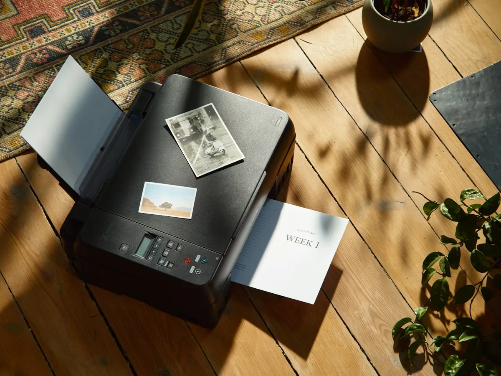
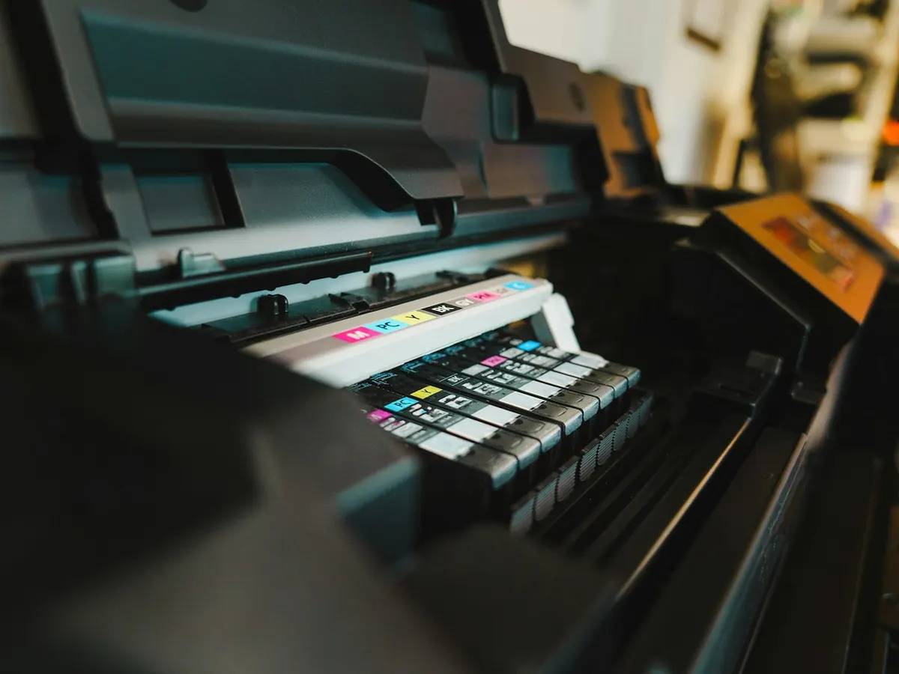
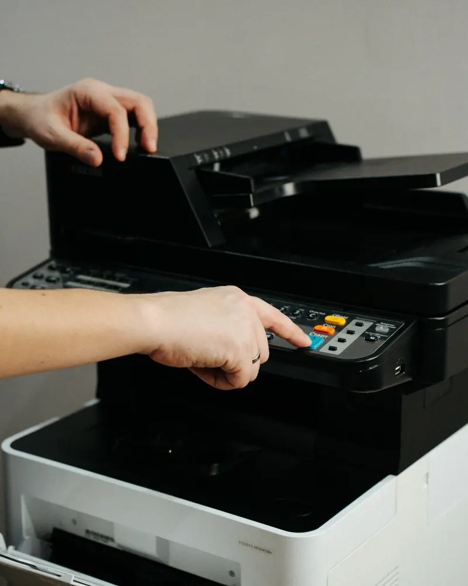

Dépannage et installation d'imprimante à domicile
Imprimante « hors ligne », pages blanches, cartouches refusées, scanner muet ou nouvelle imprimante à installer en Wi-Fi : nous réglons vos soucis d'impression chez vous ou à distance, et vous montrons comment éviter qu'ils reviennent.

Les pannes d'imprimante les plus courantes
Toutes marques, jet d'encre ou laser, en USB comme en Wi-Fi.
Imprimante « hors ligne »
Elle ne répond plus alors qu'elle est allumée : souvent une perte de connexion Wi-Fi ou un changement d'adresse réseau.
Rien ne sort
Documents bloqués dans la file d'attente, mauvais pilote, mauvaise imprimante choisie par défaut : nous remettons tout en ordre.
Cartouches non reconnues
Message d'erreur malgré des cartouches neuves, niveau d'encre faux : nous identifions la cause.
Traits, taches, pages pâles
Têtes d'impression encrassées ou réglages de qualité : un nettoyage et quelques réglages suffisent souvent.
Scanner qui ne fonctionne pas
Numérisation impossible, fichiers introuvables : nous configurons le scanner et l'envoi vers votre ordinateur ou par e-mail.
Impression depuis le téléphone
Imprimer une photo ou un billet depuis votre smartphone ou votre tablette, sans passer par l'ordinateur.

Les cartouches, source n°1 des soucis
Les cartouches sont la première source de soucis : encre qui sèche quand l'imprimante sert peu, cartouche refusée après une mise à jour, niveau d'encre affiché incorrect…
Nous vous conseillons sur le type d'imprimante et de cartouches adapté à votre usage, et nous réglons l'imprimante pour limiter la consommation d'encre au quotidien.
- Nettoyage des têtes d'impression
- Réglage du mode brouillon et du noir seul pour les documents courants
- Conseils pour éviter que l'encre ne sèche
Installer une nouvelle imprimante
Une visite suffit pour que tout fonctionne, sur tous vos appareils.

Déballage et mise en route
Retrait des protections, installation des cartouches ou du toner, premiers réglages de l'imprimante.
Connexion Wi-Fi ou USB
Connexion à votre box en Wi-Fi, ou en USB si vous préférez, avec une adresse stable pour éviter les « hors ligne ».
Ordinateurs, tablettes et téléphones
Installation sur chaque appareil de la maison, impression et numérisation testées partout.
Vous repartez autonome
Nous vous montrons comment imprimer, scanner, changer une cartouche et vérifier les niveaux d'encre.
Jet d'encre ou laser : laquelle choisir ?
Avant d'acheter, posez-vous la bonne question : qu'allez-vous imprimer, et à quelle fréquence ?
Jet d'encre
- Idéale pour les photos et les documents en couleur
- Compacte, souvent multifonction (scanner, copie)
- À utiliser régulièrement pour éviter que l'encre ne sèche
Laser
- Parfaite pour les documents en noir et blanc
- Rapide, et le toner ne sèche pas
- Idéale si vous imprimez peu souvent ou beaucoup d'un coup
Vous hésitez ? Appelez-nous avant d'acheter : nous vous orientons vers le modèle adapté, en toute indépendance.
Imprimante : vos questions
Mon imprimante est « hors ligne », que faire ?
Commencez par éteindre l'imprimante et la box, puis rallumez-les. Si le message persiste, l'imprimante a souvent perdu le Wi-Fi ou changé d'adresse sur le réseau : nous la reconnectons et la configurons pour que cela ne se reproduise pas.
Pouvez-vous installer n'importe quelle marque ?
Oui : HP, Canon, Epson, Brother et les autres, à jet d'encre ou laser, en USB, en Wi-Fi ou en réseau. Nous installons aussi les scanners et les imprimantes multifonctions.
Peut-on imprimer depuis un smartphone ou une tablette ?
Oui, la plupart des imprimantes récentes le permettent. Nous configurons l'impression depuis votre iPhone, votre iPad ou votre téléphone Android, et vous montrons comment faire.
Mes cartouches sont neuves mais l'imprimante refuse de les reconnaître.
C'est fréquent avec certaines cartouches compatibles ou après une mise à jour du logiciel de l'imprimante. Nous identifions la cause et vous indiquons la solution la plus adaptée.
Mon imprimante imprime des traits ou des pages pâles.
Les têtes d'impression sont probablement encrassées, surtout si l'imprimante sert rarement. Un nettoyage suffit souvent ; nous vous montrons aussi comment l'éviter.
Autres problèmes fréquents
Retrouvez tous nos services sur la page assistance aux particuliers.
- Ordinateur lent
- Virus et arnaques
- Box internet et Wi-Fi
- Récupération de données
- Nouvel ordinateur
- Antivirus
Nous intervenons partout sur la Côte d’Azur et à Monaco

Votre imprimante vous fait des misères ?
Appelez-nous : un premier diagnostic par téléphone règle parfois le problème en quelques minutes.